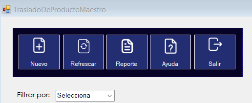

|
AYUDA TRASLADO DE PRODUCTOS |
|
|
AYUDA TRASLADO DE PRODUCTOS |
El menú general consta de siete botones y opciones para filtrar los datos con los que podemos realizar distintos procedimiento que explicaremos con detalle.
En este botón se podrá agregar un nuevo traslado de productos, al darle clic, se mostrará otro fomrulario en el que se deben ingresar los datos solicitados para así, se añada el nuevo traslado de producto.
En este botón se podrá refrescar el DataGriedView para tener los datos actualizados.
En este botón se presentará un reporte más detallado sobre los traslados de productos realizados entre sucursales.
Cuando deseemos cerrar el formulario en el que se está ubicado, solo se le debe dar clic a este botón y se cerrará.